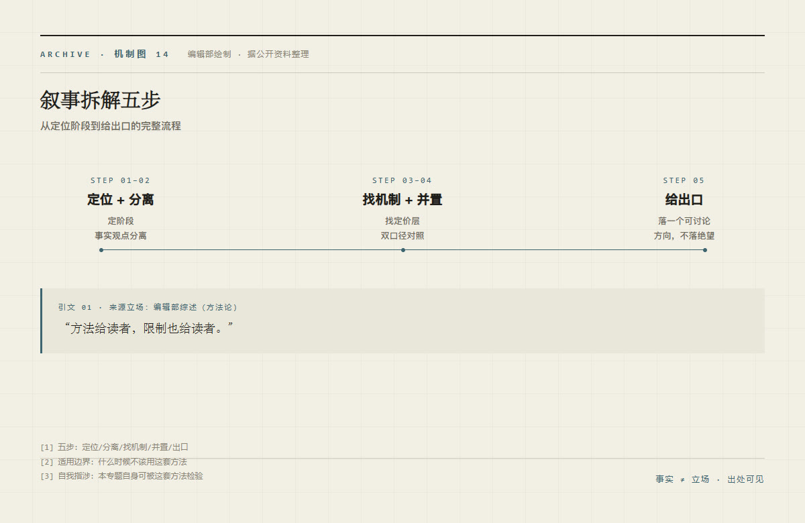

把拆解留给你：五步工具与它的边界
收束 · 之二 · 终篇 · 本专题的产出不是结论，是一套可复用的拆解方法。
终篇不重复十三篇的结论——结论都在各篇的注区与出口里。终篇做一件事：把这一路用的刀法擦干净，装进工具箱，交给读者。方法给读者，限制也给读者——包括「什么时候不该用这套方法」。一套不自我设限的拆解工具，最后都会变成新的站队工具。
第一步，定位阶段。拿到任何刷屏事件，先问：它落在「产生 / 演变 / 常态化」哪一段——是新规则的诞生现场，是机器在正常运转，还是默认设定在收割？定位错了，整个分析就会错：把常态化现象当新危机，会过度反应；把产生期信号当日常噪音，会错过地基[1]。
第二步，分离事实与观点。把事件材料摊开，逐条标注：哪些是可核对的事实（时间、数字、原话、文书），哪些是定性与归因（「他是渣男」「她在卖惨」）。规则很简单：事实可以引用，观点必须标主语。一篇不标主语的观点文，无论方向，都是在冒充事实。
第三步，找机制层。别停在「谁坏」，往下挖一层：这套叙事吃到的是哪种分发奖励（互动？争议？姿态？）、哪个默认前提在免论证运行、举证负担压在哪一边。机制层的问题清单就是前十三篇的目录——情绪估值（篇 01）、互动定价（篇 02）、文体复制（篇 03）、大声者规则（篇 04）、姿态溢价（篇 05）、程序错位（篇 06）、语言贬值（篇 07）、默认设定（篇 08）。哪条链路咬合，就从哪条拆。
第四步，双口径并置。把「情绪定性口径」与「程序分类口径」各写一行并排（篇 12 的方法），看清它们怎么互激、裁判席怎么空着。并置之后再选边——通常并置之后就不那么想选边了，这正是目的。
第五步，给出口。每篇都要落一个可讨论的方向（本专题 14 篇的出口从可解释性、等权重传播、框架标注到记录纪律），不落「没办法就这样了」。拆解的终点不是清醒的绝望，是下一句话该往哪儿说。
五步走完一轮，大概 20 分钟。它不能让你在争论里赢——它能让你知道自己在争论什么。
引文 01 · 来源立场：编辑部综述（方法论）
"方法给读者，限制也给读者。"
—— 终篇的交付声明（编辑部综述）。工具与它的禁用条款一起交付。

▲ 图 14：叙事拆解五步 · 编辑部绘制。流程说明见注 [1]。
边界一：正在发生的紧急伤害。有人正在被侵害、被围猎、处于危险中时，需要的是报警、求助、声援，不是拆机制。方法论在急救现场是冷漠的别名。先处理伤害，后做观察——顺序不能反。
边界二：你就是当事方。这套方法的前提是观察者距离。当事人有权愤怒、有权站队、有权不冷静——要求受害者「客观中立」本身就是一种暴力。当事方可以用方法整理材料（记录构件对维权极有用），但不欠任何人「平衡观点」。
边界三：材料不足。五步的第一步就要定位阶段、第二步要分离事实——材料只有情绪没有事实时，正确动作是「不下判断」，不是硬拆。硬拆出来的机制分析，只是另一种精致的站队。
边界四：拿去优化对轰。本专题拆过对轰的策略结构（篇 09），那是解剖，不是配方。把机制分析反向工程成「怎么骂更有效」，是对方法的滥用，也是本专题从篇 09 起反复敲的钉子。方法的使用条款里，这一条是禁止事项。
还有一条自我指涉的边界：本专题自己也在被这套方法检验。它的母命题（「男性叙事在公共场域失语」）是观察归纳，不是免论证前提（篇 08 的方法倒着用）；它的引文有综述转述成分（已在注区标出）；它的立场声明（观察者、不站队）本身也是一种站位。谁用五步工具拆出本专题的问题，谁就把这套方法用对了——包括现在，你可以对这 14 篇做一件事：双口径并置它。
交代三件事。第一，专题没解决的问题：三代机制（短视频 / AI 生成内容）在专题说明里标注为「待观察」，本专题只拆到二代；「魔法对轰」的实证数据（参与规模、收益分布）全缺，篇 09、10 的成本收益表是分析框架不是统计。第二，已交付的资产：14 篇正文、14 张机制图、14 组封面（2.3 + 1:1）、一套「档案」风格模板与物料生成器（`00-模板/档案/`）、一个双口径对照法、一个五步工具。第三，写作纪律执行情况：敏感指控未转述（篇 03、06、11）、两面数据并陈（篇 05）、双向误伤并陈（篇 10）、每篇有出口（14/14）——执行与否由读者按篇 04 篇末的注区核对。
最后回到专题的起点。为什么一个男性作者要写「不站男性角度」的男性叙事观察？因为站队的动作本身就是本专题的解剖对象。观察者不是没有立场，观察者的立场是：让结构显形，让两边的默认前提都重新变得需要论证。这件事对「男性叙事」的真正帮助，不是替它喊冤——喊冤只是把对轰的性别标签换一面——而是把「它为什么喊不响」的机器画出来。机器画出来了，才谈得上改规则；改规则，才有第四篇、第五篇的位置。
档案到此终结。机器还在转，记录继续。
注 · SOURCES
[1] 五步工具（定位 / 分离 / 找机制 / 并置 / 出口）为本专题沉淀的方法框架，从 14 篇的写作纪律反向整理，系编辑部归纳。
[2] 四条适用边界（紧急伤害 / 当事方 / 材料不足 / 优化对轰）为方法的禁用与限制条款。
[3] 三代机制（短视频 / AI 生成内容）待观察、对轰实证数据缺失，为本文自报的局限。
[4] 专题资产清单与写作纪律执行情况，见《00-专题说明.md》与各篇注区。
口径说明
本文为社会学观察，不站任何性别立场，作者性别不作为论证依据。方法含自我指涉检验，母命题可被质疑；适用边界即禁用条款。拆解机制是为了理解，不是行动指南。
出口：拿五步工具去拆你明天遇到的第一个刷屏事件。如果拆出本专题没覆盖的机制——三代机制、新的默认前提、新的文体——那说明方法还活着。工具的价值不在被崇拜，在被用旧。